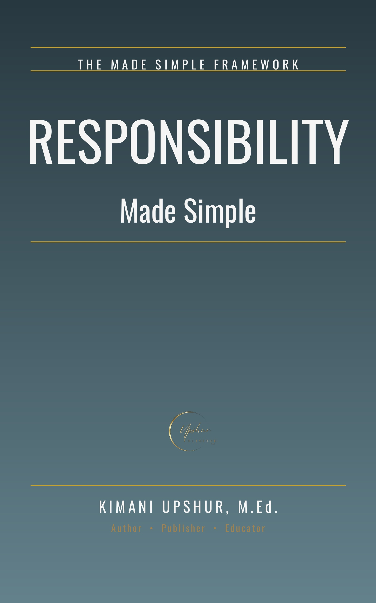

Responsibility Made Simple
by Kimani Upshur, M.Ed.
The email was your fault. The silence was your choice. The mess has your name on it. Most of us have a thousand ways to say "it was not my fault" — and we use every one of them before breakfast. Responsibility Made Simple will teach you a better way, built on three simple words: Own. Do. Answer. Own your choices instead of blaming. Do your duties instead of dodging. Answer for the consequences instead of hiding. Across twelve short chapters — one per day — you will stand with Adam in the garden and learn to end the blame game, hear Cain's famous dodge and discover you are your brother's keeper, feel the weight of your words with Jesus, and watch Moses run out of excuses at the burning bush. You will work beside Joseph in Potiphar's house, build with Nehemiah on the wall, walk the Jericho road with the Good Samaritan, and count talents with the servants. You will watch David confess in six words, sit with Peter at his restoration breakfast, run your own race with Paul, and stand before the judgment seat of Christ — where the books will be opened and secret faithfulness will be rewarded. Every chapter follows the proven Made Simple pattern: Scripture first, then clear teaching, three reflection questions, three concrete application steps, and a written prayer. No guilt trips. No lectures. Just honest, warm, second-person guidance for becoming the kind of person who owns their life. Whether you are rebuilding after failure, carrying duties nobody sees, or simply tired of the blame game, this book will show you how to own your choices, do your work, and answer with a clear conscience — all the way home.
- Publisher
- Upshur Unlimited, LLC
- Author
- Kimani Upshur, M.Ed.
- Format
- Ebook
- Language
- English